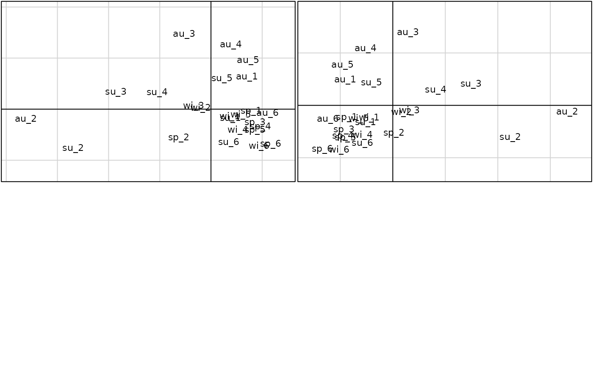

Projection of additional items in a PCO analysis
supdist.RdThis function takes the grand distance matrix between all items (Active + Supplementary). It computes the PCO of the distance matrix between Active items, and projects the distance matrix of Supplementary items in this PCO.
Arguments
- d
Grand distance matrix between all (Active + Supplementary) items
- fsup
A factor with two levels giving the Active (level `A') or Supplementary (level `S') status for each item in the distance matrix.
- tol
Numeric tolerance used to evaluate zero eigenvalues
Value
- coordSup
Coordinates of Supplementary items projected in the PCO of Active items
- coordAct
Coordinates of Active item
- coordTot
Coordinates of Active plus Supplementary items
References
Computations based on the Methods section of the following paper: Pele J, Abdi H, Moreau M, Thybert D, Chabbert M (2011) Multidimensional Scaling Reveals the Main Evolutionary Pathways of Class A G-Protein-Coupled Receptors. PLoS ONE 6(4): e19094. doi:10.1371/journal.pone.0019094
Examples
data(meau)
## Case 1: Supplementary items = subset of Active items
## Supplementary coordinates should be equal to Active coordinates
## PCO of active items (meau dataset has 6 sites and 10 variables)
envpca1 <- dudi.pca(meau$env, scannf = FALSE)
dAct <- dist(envpca1$tab)
pco1 <- dudi.pco(dAct, scannf = FALSE)
## Projection of rows 19:24 (winter season for the 6 sites)
## Supplementary items must be normalized
f1 <- function(w) (w - envpca1$cent) / envpca1$norm
envSup <- t(apply(meau$env[19:24, ], 1, f1))
envTot <- rbind.data.frame(envpca1$tab, envSup)
dTot <- dist(envTot)
fSA1 <- as.factor(rep(c("A", "S"), c(24, 6)))
cSup1 <- supdist(dTot, fSA1)
## Comparison (coordinates should be equal)
cSup1$coordSup[, 1:2]
#> A1 A2
#> wi_11 0.7415798 -0.2904034
#> wi_21 -0.4070480 0.0452591
#> wi_31 -0.6789514 0.1133762
#> wi_41 1.0488737 -0.8146558
#> wi_51 1.1654134 -0.2278280
#> wi_61 1.8807510 -1.4546144
pco1$li[19:24, ]
#> A1 A2
#> wi_1 0.7415798 -0.2904034
#> wi_2 -0.4070480 0.0452591
#> wi_3 -0.6789514 0.1133762
#> wi_4 1.0488737 -0.8146558
#> wi_5 1.1654134 -0.2278280
#> wi_6 1.8807510 -1.4546144
data(meaudret)
## Case 2: Supplementary items = new items
## PCO of active items (meaudret dataset has only 5 sites and 9 variables)
envpca2 <- dudi.pca(meaudret$env, scannf = FALSE)
dAct <- dist(envpca2$tab)
pco2 <- dudi.pco(dAct, scannf = FALSE)
## Projection of site 6 (four seasons, without Oxyg variable)
## Supplementary items must be normalized
f1 <- function(w) (w - envpca2$cent) / envpca2$norm
envSup <- t(apply(meau$env[seq(6, 24, 6), -5], 1, f1))
envTot <- rbind.data.frame(envpca2$tab, envSup)
dTot <- dist(envTot)
fSA2 <- as.factor(rep(c("A", "S"), c(20, 4)))
cSup2 <- supdist(dTot, fSA2)
## Supplementary items vs. real items (both in red)
if(!adegraphicsLoaded()) {
par(mfrow = c(2, 2))
s.label(pco1$li, boxes = FALSE)
s.label(rbind.data.frame(pco2$li, cSup2$coordSup[, 1:2]), boxes = FALSE)
} else {
gl1 <- s.label(pco1$li, plabels.optim = TRUE, plabels.col=rep(c(rep("black", 5),"red"), 4))
gl2 <- s.label(rbind.data.frame(pco2$li, cSup2$coordSup[, 1:2]),
plabels.optim = TRUE, plabels.col=rep(c("black","red"),c(20, 4)))
ADEgS(list(gl1, gl2))
}
